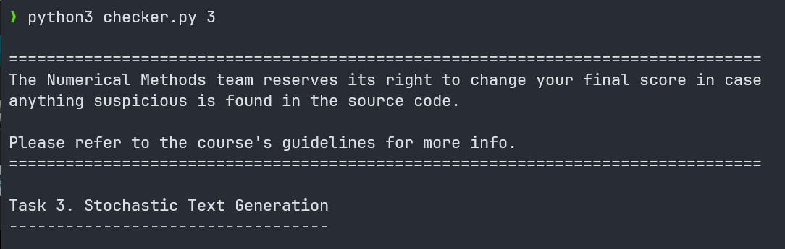

Tema1 MN

Motivatia temei
Prima temă de casă la Metode Numerice vizează următoarele obiective:
Familiarizarea cu mediul de programare GNU Octave și facilitățile oferite de acesta;
Folosirea matricelor și a sistemelor de ecuații liniare pentru a modela probleme reale, întâlnite în viața de zi cu zi, precum lanțurile Markov;
Introducerea în învățarea supervizată.
Contents
Task 1: Detecția anomaliilor
Task 2: Kernel Regression
Task 3: Markov Text Generation
Checker tema
Modul de folosire al checkerului:
Homework check
Din folderul temei, se executa cu
python3fisierulchecker.py.Se poate specifica ca argument si numarul taskului

Author
Rares Andrei Sarmasag
student at Polithenica Bucuresti - Faculty of Automatic Control and Computer Science
Seria CB-312 @ CTI 2024
contact email: rares.sarmasag@stud.acs.upb.ro.
discord: _ap0
Last modified: 30 April 2024